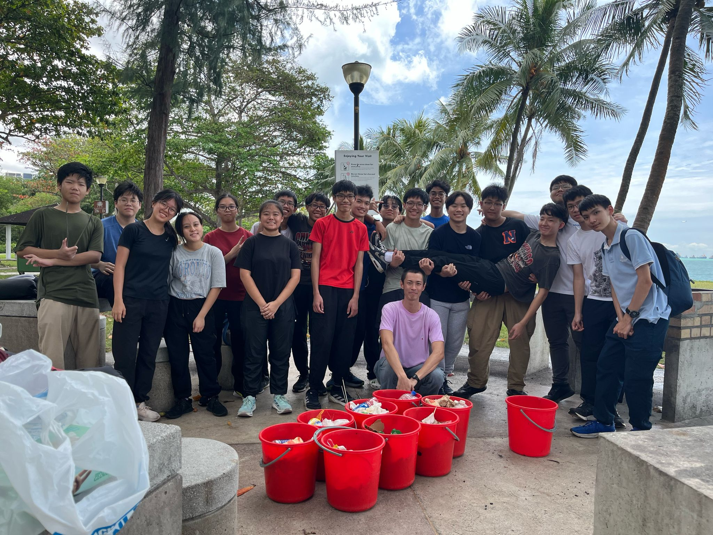

In 2025, I was appointed as the Vice-Chairperson of my class, a role that gave me the opportunity to take on greater responsibility and contribute actively to our class community. I supported the Class Chairperson in leading discussions, coordinating class activities, and ensuring smooth communication between students and teachers.
As part of my role, I helped organise key events such as the Parents Engagement Programme, where I facilitated a presentation to students' parents to inform them about the programmes and events their children were participating in. I also played a leading role in coordinating a Beach Clean-Up at East Coast Park (ECP).
